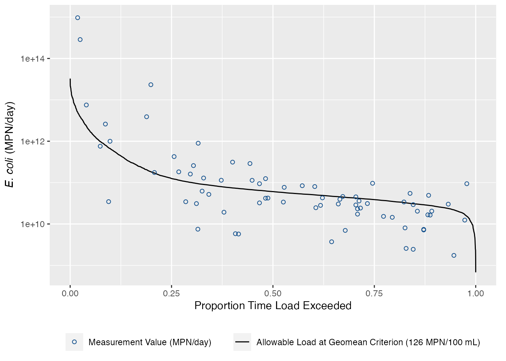

LDC Example
2021-05-18
Step 1
Setup the project in R Studio. Use “File -> New Project,” name your project and select the directory to store your project. I always recomend setting up a couple of folder for all project workflows, this can be adjusted based on project needs but this provides a good starting point:
Home Folder
|
|-RawData
|-ExportData
|-Figures
|-Scripts
projectname.Rproj
readme.md
The idea in this file structure is that we never want to alter the raw data we are manipulating. All data manipulation is done via the scripts and stored in memory and written to a different exported data file.
Step 2
Install and load the required packages. Use install.packages(dataRetrieval) as needed to install required packages.
library(dataRetrieval) ## for USGS daily streamflow data
library(tidyverse)
library(janitor) ## cleans up messy variable names
## uncomment the line below to install
# install.packages(remotes)
# remotes::install_github("mps9506/dartx")
library(dartx)
library(DescTools)Step 3
We have two general scenarios we need to consider. The easiest is when there is a monitoring station right next to a stream flow gage. This way we can estimate bacteria loads (count units) using measured streamflow (water volume) and measured bacteria concentration. Concentration times volume equals counts or mass.
The second scenario is when there is no streamflow data where the bacteria data is collected. We need to estimate the streamflow at the water quality site. If there is a stream gage upstream or downstream of our stie of interest, a simple drainage area ratio works well. the dartx package provides an empriically measured adjustment factor to the drainage area ratio as applied in Texas.
One caveat, if this is being done for a TMDL (or TSD in preperation for a TMDL), we have to account for wastewater permits, future growth and water rights on streamflow. I am not concerned about that for this example.
Start with the basic example. This example uses Tres Palacios Creek SWQM station 12517. There is a USGS gage, 08162600 located at the site. The bacteria data has been downloaded manually from SWQMIS and is in pipe delmminated format in the RawData folder. The streamflow data will be downloaded from USGS and stored in the RawData folder for future use.
# Read in the bacteria data
df_12517 <- read_delim("RawData/SWQM-12517-P31699.txt",
"|", escape_double = FALSE, col_types = cols(Segment = col_character(),
`Station ID` = col_character(), `Parameter Code` = col_character(),
`End Date` = col_date(format = "%m/%d/%Y"),
`End Time` = col_skip(), `End Depth` = col_skip(),
`Start Date` = col_skip(), `Start Time` = col_skip(),
`Start Depth` = col_skip(), `Composite Category` = col_skip(),
`Composite Type` = col_skip(), `Submitting Entity` = col_skip(),
`Collecting Entity` = col_skip(),
`Monitoring Type` = col_skip(), Comments = col_skip()),
trim_ws = TRUE)
df_12517 <- clean_names(df_12517)
df_12517## # A tibble: 72 x 9
## rfa_sample_set_id_t… segment station_id station_description parameter_code
## <chr> <chr> <chr> <chr> <chr>
## 1 R212870 1502 12517 TRES PALACIOS CREEK A… 31699
## 2 R216644 1502 12517 TRES PALACIOS CREEK A… 31699
## 3 R218189 1502 12517 TRES PALACIOS CREEK A… 31699
## 4 1444077 1502 12517 TRES PALACIOS CREEK A… 31699
## 5 1478385 1502 12517 TRES PALACIOS CREEK A… 31699
## 6 1643855 1502 12517 TRES PALACIOS CREEK A… 31699
## 7 WR1104N 1502 12517 TRES PALACIOS CREEK A… 31699
## 8 R194025 1502 12517 TRES PALACIOS CREEK A… 31699
## 9 1342329 1502 12517 TRES PALACIOS CREEK A… 31699
## 10 10035889 1502 12517 TRES PALACIOS CREEK A… 31699
## # … with 62 more rows, and 4 more variables: parameter_description <chr>,
## # greater_than_less_than <chr>, value <dbl>, end_date <date>This code chunk will download the streamflow data. I usually write this in a sepearte script so I only have to run it one time and write the output file to the raw data folder. The main script will read the data from the raw data folder instead of trying to download the data every single time we run the script.
# download mean daily streamflow and write to csv
Q_df <- readNWISdv(siteNumbers = "08162600",
startDate = "2000-01-01",
endDate = "2020-12-31",
parameterCd = "00060",
statCd = "00003")
Q_df <- renameNWISColumns(Q_df)
write_csv(Q_df,
"RawData/meandailyQ_08162600.csv")
as_tibble(Q_df)## # A tibble: 7,671 x 5
## agency_cd site_no Date Flow Flow_cd
## <chr> <chr> <date> <dbl> <chr>
## 1 USGS 08162600 2000-01-01 0.84 A
## 2 USGS 08162600 2000-01-02 3 A
## 3 USGS 08162600 2000-01-03 3.4 A
## 4 USGS 08162600 2000-01-04 2.6 A
## 5 USGS 08162600 2000-01-05 1.6 A
## 6 USGS 08162600 2000-01-06 3.2 A
## 7 USGS 08162600 2000-01-07 11 A
## 8 USGS 08162600 2000-01-08 17 A
## 9 USGS 08162600 2000-01-09 22 A
## 10 USGS 08162600 2000-01-10 18 A
## # … with 7,661 more rowsAlways do a quick exploratory plot of the data. Nothing stands out on the plots below. We could do some more exploration but I don’t think it is needed here.
ggplot(df_12517) +
geom_point(aes(end_date, value)) +
scale_y_log10()ggplot(Q_df) +
geom_line(aes(Date, Flow))Flow Duration Curve
Now we make a flow duration curve by calculating the probablity that a flow on any given day will be exceeded.
Q_df <- Q_df %>%
select(Date, Flow) %>%
mutate(FlowExceedance = 1/(length(Flow)/rank(-Flow))) ## this calculates the prob of flow being exceeded
as_tibble(Q_df)## # A tibble: 7,671 x 3
## Date Flow FlowExceedance
## <date> <dbl> <dbl>
## 1 2000-01-01 0.84 0.999
## 2 2000-01-02 3 0.993
## 3 2000-01-03 3.4 0.990
## 4 2000-01-04 2.6 0.994
## 5 2000-01-05 1.6 0.998
## 6 2000-01-06 3.2 0.991
## 7 2000-01-07 11 0.811
## 8 2000-01-08 17 0.580
## 9 2000-01-09 22 0.443
## 10 2000-01-10 18 0.545
## # … with 7,661 more rowsWe can plot the FDC now as:
ggplot(Q_df) +
geom_line(aes(FlowExceedance,
Flow)) +
scale_y_log10() +
labs(x = "Proportion Time Flow Exceeded",
y = "Flow (cfs)")LDC
The next step is to convert the FDC to an LDC with bacteria data. The steps are to multiply the flow by the instream bacteria standard. This tells us the allowable bacteria loading in the stream under different flow exceedance conditions.
Q_df %>%
## MPN/100mL * cubic feet/sec * mL/cubic feet * sec/day = mpn/day
mutate(LDC = (126/100) * Flow * 28316.8 * 86400) -> Q_df
ggplot(Q_df) +
geom_line(aes(FlowExceedance, LDC)) +
scale_y_log10() +
labs(x = "Proportion Time Load Exceeded",
## sorry, stupid way to get italics into labels
y = expression(paste(italic("E. coli"), " (MPN/day)")))Now we want to overlay the measured bacteria data as loads on the LDC. So we pair the bacteria data by date to flow, then convert the concentration to a daily load and add it to the plot.
Q_df %>%
left_join(df_12517 %>%
select(end_date, value),
by = c("Date" = "end_date")) %>%
mutate(MeasuredLoad = (value/100) * Flow * 28316.8 * 86400) -> Q_df
as_tibble(Q_df)## # A tibble: 7,671 x 6
## Date Flow FlowExceedance LDC value MeasuredLoad
## <date> <dbl> <dbl> <dbl> <dbl> <dbl>
## 1 2000-01-01 0.84 0.999 2589451297. NA NA
## 2 2000-01-02 3 0.993 9248040346. NA NA
## 3 2000-01-03 3.4 0.990 10481112392. NA NA
## 4 2000-01-04 2.6 0.994 8014968300. NA NA
## 5 2000-01-05 1.6 0.998 4932288184. NA NA
## 6 2000-01-06 3.2 0.991 9864576369. NA NA
## 7 2000-01-07 11 0.811 33909481267. NA NA
## 8 2000-01-08 17 0.580 52405561958. NA NA
## 9 2000-01-09 22 0.443 67818962534. NA NA
## 10 2000-01-10 18 0.545 55488242074. NA NA
## # … with 7,661 more rowsggplot(Q_df) +
geom_line(aes(FlowExceedance, LDC,
linetype = "Allowable Load at Geomean Criterion (126 MPN/100 mL)")) +
geom_point(aes(FlowExceedance, MeasuredLoad,
shape = "Measurement Value (MPN/day)",
color = "Measurement Value (MPN/day)")) +
scale_y_log10() +
labs(x = "Proportion Time Load Exceeded",
y = expression(paste(italic("E. coli"), " (MPN/day)"))) +
scale_shape_manual(name = "values", values = c(21)) +
scale_color_manual(name = "values", values = c("dodgerblue4")) +
theme(legend.position = "bottom",
legend.direction = "vertical",
legend.title = element_blank(),
plot.margin = margin(5, 10, 5, 5))## Warning: Removed 7599 rows containing missing values (geom_point).
Now we need to split the flow exceedance into different categories and summarize the loads by category. Here we make a summary table that we can add to our ggplot.
load_summary <- Q_df %>%
mutate(Flow_Condition = case_when(
FlowExceedance >= 0 & FlowExceedance < 0.1 ~ "Highest Flows",
FlowExceedance >= 0.1 & FlowExceedance < 0.4 ~ "Moist Conditions",
FlowExceedance >= 0.4 & FlowExceedance < 0.6 ~ "Mid-Range Flows",
FlowExceedance >= 0.6 & FlowExceedance < 0.9 ~ "Dry Conditions",
FlowExceedance >= 0.9 & FlowExceedance <= 1 ~ "Lowest Flows"
)) %>%
mutate(p = case_when(
FlowExceedance > 0 & FlowExceedance <= 0.1 ~ 0.05,
FlowExceedance > 0.1 & FlowExceedance <= 0.4 ~ 0.25,
FlowExceedance > 0.4 & FlowExceedance <= 0.6 ~ 0.5,
FlowExceedance > 0.6 & FlowExceedance <= 0.9 ~ 0.75,
FlowExceedance > 0.9 & FlowExceedance <= 1 ~ 0.95
)) %>%
group_by(Flow_Condition, p) %>%
summarise(quantileflow = round(quantile(Flow, .5, type = 5, names = FALSE), 3),
geomean_sample = DescTools::Gmean(value, na.rm = TRUE),
calcload = quantileflow * geomean_sample/100 * 28316.8 * 86400)## `summarise()` has grouped output by 'Flow_Condition'. You can override using the `.groups` argument.load_summary## # A tibble: 5 x 5
## # Groups: Flow_Condition [5]
## Flow_Condition p quantileflow geomean_sample calcload
## <chr> <dbl> <dbl> <dbl> <dbl>
## 1 Dry Conditions 0.75 12.6 68.9 2.12e10
## 2 Highest Flows 0.05 542 459. 6.08e12
## 3 Lowest Flows 0.95 6.9 103. 1.74e10
## 4 Mid-Range Flows 0.5 19.7 109. 5.27e10
## 5 Moist Conditions 0.25 40.7 193. 1.92e11Final plot
Final plot:
ggplot(Q_df) +
geom_vline(xintercept = c(.10, .40, .60, .90), color = "#cccccc") +
geom_line(aes(FlowExceedance, LDC,
linetype = "Allowable Load at Geomean Criterion (126 MPN/100 mL)")) +
geom_point(aes(FlowExceedance, MeasuredLoad,
shape = "Measurement Value (MPN/day)",
color = "Measurement Value (MPN/day)")) +
geom_point(data = load_summary, aes(p, calcload,
shape = "Exisiting Geomean Load (MPN/day)",
color = "Exisiting Geomean Load (MPN/day)")) +
annotation_logticks(sides = "l", color = "#cccccc") +
annotate("text", x = .05, y = max(Q_df$MeasuredLoad, na.rm = TRUE) + (0.5 * max(Q_df$MeasuredLoad, na.rm = TRUE)), label = "High\nflows", hjust = 0.5, size = 3, family = "Arial Condensed", lineheight = 1) +
annotate("text", x = .25, y = max(Q_df$MeasuredLoad, na.rm = TRUE) + (0.5 * max(Q_df$MeasuredLoad, na.rm = TRUE)), label = "Moist\nconditions", hjust = 0.5, size = 3, family = "Arial Condensed", lineheight = 1) +
annotate("text", x = .50, y = max(Q_df$MeasuredLoad, na.rm = TRUE) + (0.5 * max(Q_df$MeasuredLoad, na.rm = TRUE)), label = "Mid-range\nflows", hjust = 0.5, size = 3, family = "Arial Condensed", lineheight = 1) +
annotate("text", x = .75, y = max(Q_df$MeasuredLoad, na.rm = TRUE) + (0.5 * max(Q_df$MeasuredLoad, na.rm = TRUE)), label = "Dry\nconditions", hjust = 0.5, size = 3, family = "Arial Condensed", lineheight = 1) +
annotate("text", x = .95, y = max(Q_df$MeasuredLoad, na.rm = TRUE) + (0.5 * max(Q_df$MeasuredLoad, na.rm = TRUE)), label = "Low\nflows", hjust = 0.5, size = 3, family = "Arial Condensed", lineheight = 1) +
scale_y_log10() +
labs(x = "Proportion Time Load Exceeded",
y = expression(paste(italic("E. coli"), " (MPN/day)"))) +
scale_shape_manual(name = "values", values = c(12, 21)) +
scale_color_manual(name = "values", values = c("red", "dodgerblue4")) +
theme_bw() +
theme(legend.position = "bottom",
legend.direction = "vertical",
legend.title = element_blank(),
plot.margin = margin(5, 10, 5, 5))## Warning: Removed 7599 rows containing missing values (geom_point).References

Text and figures are licensed under a Creative Commons Attribution-ShareAlike 4.0 International License unless otherwise indicated.